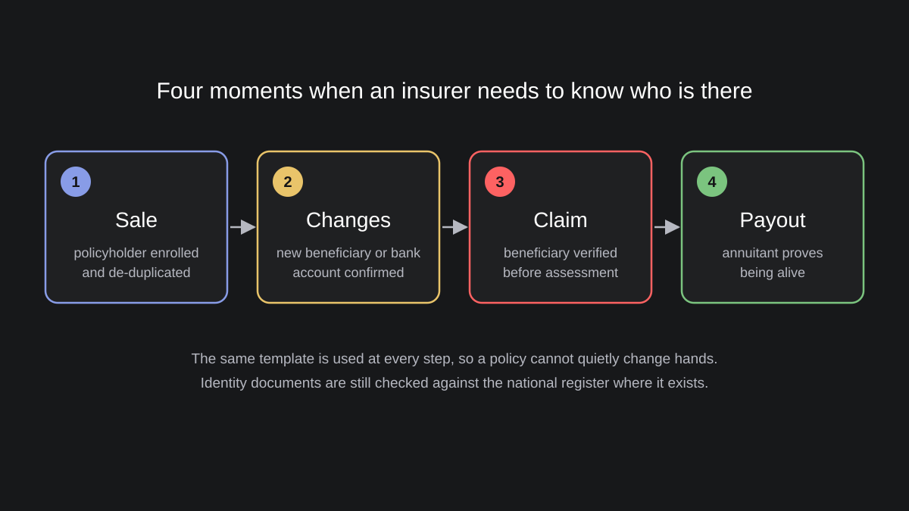

Identity Fraud in Life and Funeral Insurance: What South Africa's Numbers Show
When does a life insurer actually need to know who its client is? Not once, at sale, but at least four times: when the policy is sold, when a beneficiary or bank account changes, when someone files a claim, and when an annuity is paid out. In most markets the insurer checks an ID document at the first moment and trusts paperwork at the others. South Africa publishes unusually detailed fraud statistics for its life insurance industry, and they show where this approach breaks.
What the numbers show
The Association for Savings and Investment South Africa (ASISA) collects fraud data from its members every year. In 2024 life insurers and investment companies detected 16,520 cases of fraud and dishonesty, 26% more than the 13,074 cases in 2023. They prevented R1.39 billion in fraudulent claims, applications and withdrawals, and lost R131.6 million to cases detected too late.
Compared with R639 billion of honest benefits paid that year, the direct loss is small. Consider, though, that the loss is small because insurers check claims before paying them, and the R1.39 billion prevented shows how much is attempted. The structure of the cases is more interesting than the total:
- Remuneration fraud, 9,904 cases. Fraud by call centre agents, tied agents and advisers to earn commission or fees. This is the largest category by count.
- Fraudulent and dishonest life claims, 5,505 cases, with R940.9 million prevented. According to ASISA's forensic committee, these are driven largely by false death claims.
- Deceased estate fraud, 161 cases, up from 54 a year earlier, with impersonation and fabricated documents used to collect the estate of a deceased person.
- Fraudulent applications, 166 cases, including misrepresentation, impersonation and identity theft, with R192.8 million prevented.
- Murder for money, 38 cases, up from 14, of which 36 involved funeral policies.
Most of these categories have something in common. The insurer does not know for certain who sold the policy to whom, who changed it, or who is collecting the money.
The national register helps, but does not answer the question
South African insurers verify clients against the National Population Register of the Department of Home Affairs. In March 2025 the minister announced an upgrade of this verification service and named the problems it had before: failure rates of up to 50% reported by users, responses that took up to 24 hours, and errors that required manual checks. After the upgrade the error rate in testing was well below 1%. In December 2025 the minister added that the department has no exact figure for duplicate ID numbers in the register, and named the causes: identity theft, false birth registrations, several people sharing one ID number and one person holding several. Home Affairs is now rolling out facial recognition against the entire register for certain transactions.
This is the right direction, and India went a similar way when IRDAI made KYC mandatory for all new insurance policies from January 2023, with Aadhaar-based e-KYC as one of the options. Still, a national register answers a different question. It confirms that an ID number exists and, at best, that a face matches the photo on record. It does not confirm that the person changing the beneficiary today is the person who bought the policy ten years ago, and in a register with duplicates it cannot even guarantee that one person has one number.

Where a biometric of its own helps the insurer
An insurer that enrolls its clients biometrically at sale gets an identifier that belongs to the policy, not to a document. This way each of the four moments can be checked against the same template:
- At sale. A policy written for a person who never agreed to it, or for a person who does not exist, does not pass enrollment. De-duplication against existing clients shows when the same person appears under a second name.
- At policy changes. A new beneficiary or bank account is accepted only after the policyholder confirms it. This is the cheapest point to stop a takeover, long before there is a claim.
- At claim. Beneficiaries enrolled when they were named can be verified when they come to collect, so impersonation of a beneficiary fails at the counter instead of being found by investigators months later.
- At payout. Annuitants confirm they are alive with a scan instead of a paper life certificate, which removes payments to people who died years ago.
We recommend iris together with face. Face works on the client's phone for remote flows, iris works at agents and branches, where it is far more accurate for de-duplication and does not suffer from worn fingerprints. On top of that, both are stored as templates in ISO formats, so the insurer is not tied to one vendor for the lifetime of its policies, which is often decades.
What biometrics does not solve
A biometric cannot prove that a person has died. A false death claim with a forged death certificate still has to be checked against the population register and by investigators. Biometrics also does nothing against a beneficiary who causes the death, the worst category in the ASISA data. What it does is narrow the field: when the policyholder, the beneficiaries and every change between them are verified, the remaining cases are fewer and easier to investigate.
There are also obligations. Biometric data of policyholders is special category personal data almost everywhere, so it needs a lawful basis, consent where required, encryption, separation from policy records and a retention period. For funeral and microinsurance sold through agents in rural areas, devices have to work offline, otherwise verification becomes a reason not to sell.
Lessons for insurers in high-fraud markets
- Verify at every moment that moves money, not only at sale.
- Enroll beneficiaries when they are named. Verifying a claimant without a template on file is guesswork.
- Use the national register and your own biometric together. The first confirms the document, the second confirms the person.
- Start where commission is paid. A biometric at sale protects the insurer from its own channel.
Sources: ASISA, Fraud and dishonesty worth R1.4 billion prevented by life insurers and investment companies in 2024; TimesLIVE, Fraudulent death claims haunt insurers, 2024; SAnews, Home Affairs upgrades digital verification system, 2025; Pretoria News, Home Affairs tackles duplicate IDs with new digital verification, 2025; Moneylife, New IRDAI regulations: KYC is mandatory for all insurance buyers.